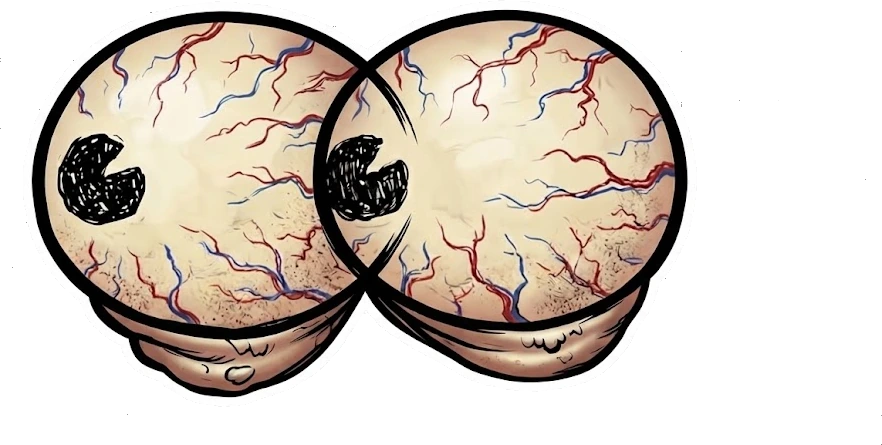

Not a Nosy Neighbor
The best and most exotic coffee in LA.
We change the coffee fast, and the limited editions go faster. Most drops are gone before anyone who waited for a post finds out. Get on the list and you hear first.
Drop announcements only. No weekly newsletter, no recipes.
We mind our own business, which happens to be good coffee. Unlike our really nosy competitors, who offer the most basic and cheap coffee you can find.
Why we are different
We roast our own coffee. Small batches, a few miles from where you drink it, by people whose names are on the bag.
- We cup every lot before it ships. If it does not score, it does not go in a bag. That is the whole job.
- We buy direct and print the farm on the front. Not "product of multiple origins", not a blend number.
- We stamp the roast date. Not a best-before eighteen months out that tells you nothing.
- We chase processes almost nobody carries. Anaerobic natural, lactic, co-ferment, carbonic maceration.
Most cafés do none of this. They order commodity beans by the case from a big box roaster, and nobody behind that counter has ever tasted the lot before it hit your cup. It is a perfectly good way to run a shop. It is not a way to make good coffee.
Your front door is a lot closer than Claremont.
Roasted, bagged and shipping within three days, max. Anyone in Central and Southern California gets their order the next day after we ship it.